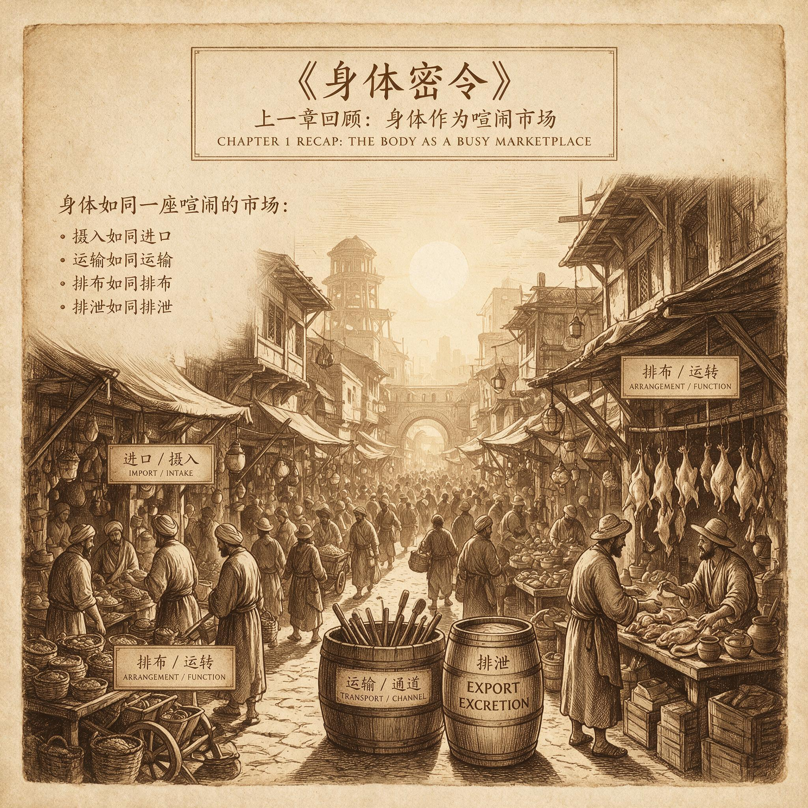

第 6 章
上一章建立了“身体是喧闹市场”的类比
你走进一家超市。货架上摆着一瓶橙黄色的饮料，包装上印着饱满多汁的橙子切片，阳光从果肉缝隙中穿透过来，让你几乎能闻到那股清甜的香气。你拿起瓶子，翻到背面，配料表上写着：水、果葡糖浆、柠檬酸、食用香精、日落黄。没有一滴橙汁。你拧开瓶盖喝了一口。甜的。你的舌头告诉你，能量来了。你的大脑释放了一点点多巴胺，你的胰腺开始分泌胰岛素，你的身体做好了迎接糖分冲击的准备。但你喝下去的，本质上是一瓶带香味和色素的糖水，它所含的能量和你身体预期的完全不同——更准确地说，它所含的营养和你身体准备处理的，根本不是同一种东西。
这不是你的错。你的味觉系统已经在地球上运行了数亿年，它被反复打磨、优化、调试，直到能够精准地识别食物中的化学信息。甜味受体检测糖分子，苦味受体检测潜在的毒素，鲜味受体检测氨基酸，咸

上一章建立了“身体是喧闹市场”的类比：历史出版插图
AI 生成插图，非史实影像。
味受体检测矿物质。每一个信号都曾经是可靠的。
上一章我们说，身体是个喧闹的市场。疼痛、发烧、疲劳、恶心——这些不适感不是故障警报，而是摊位上此起彼伏的叫卖声。那个市场运行了数亿年，形成了一套精密的调控逻辑。但它有个隐含的前提：市场所处的环境是稳定的，信号的含义是可靠的。当甜味意味着糖，当饱腹感意味着营养摄入足够，当疲劳意味着身体需要休息——在这些对应关系成立的条件下，市场的运行是高效的、协调的、富有智慧的。
这一章，我们要面对一个棘手的事实：这个市场会失灵。不是因为市场本身坏了，而是因为它被扔进了一个它从未演化来应对的环境里。信号的可靠性被系统性地破坏了，反馈的时效性被根本性地打乱了。而这一切的发生，距离我们的身体最后一次重大进化更新，只过去了不到一万年——在进化的时钟上，这连一秒钟都算不上。
让我们回到那瓶橙汁饮料。它之所以能够存在，是因为食品科学破解了味觉信号的编码规则。人类的甜味受体是一个叫做T1R2/T1R3的蛋白复合体，它坐落在舌头的味蕾细胞表面。当糖分子与这个受体结合时，它会触发一连串的细胞内信号传导，最终让味觉神经向大脑发送一个明确的电报：甜。这个系统在自然界中经过了精心的校准——葡萄糖、果糖、蔗糖这些真正携带能量的分子能够激活它，而其他分子则不能。大自然没有给造假者留下空间，因为在自然界中，制造一个能和甜味受体结合但不含能量的分子，是一件成本极高、几乎不可能的事情。
但1879年，这一切改变了。那一年，约翰·霍普金斯大学的研究员康斯坦丁·法尔伯格在实验室里合成了一种叫做邻苯甲酰磺酰亚胺的化合物。他无意中发现这种东西甜得惊人——比蔗糖甜三百到五百倍。他把这种物质命名为糖精。这是人类历史上第一种人造甜味剂。它能够以极高的效率激活甜味受体，但它本身不是糖，不含能量，进入人体后几乎不被代谢，原样排出。
大自然花了几亿年建立的信号-实质对应关系，被一个实验室里的偶然发现炸开了一道裂缝。这道裂缝在此后的一百多年里不断扩大。1937年，甜蜜素被发现。1965年，阿斯巴甜问世。1976年，三氯蔗糖被合成。还有安赛蜜、纽甜、阿力甜——每一种都是全新的分子，每一种都能以比蔗糖强几十倍到几千倍的效率激活甜味受体，每一种都不携带它们所承诺的能量。
这不是一个孤立的事件。同样的故事在苦味信号上也在上演，只是方向相反。人类的苦味受体是一个由大约二十五个不同基因编码的受体家族，叫做TAS2R。它们分布在舌头、上颚、咽喉甚至肠道里。在自然界中，这些受体检测的是植物毒素、腐败产物和其他潜在的危险化学物质。苦味意味着需要警惕——这是一个保护性的厌恶信号，让婴儿本能地吐出苦的东西，让成人在尝到苦味时皱起眉头、减少摄入。但现代食品工业学会了用糖、脂肪和盐来掩盖苦味。咖啡是苦的，但我们往里面加糖和奶油。
可可粉苦得难以入口，但巧克力棒里的糖和乳脂让它变成了愉悦的享受。啤酒的苦味被麦芽的甜味和酒精的麻醉效应所平衡。蔬菜中的苦味植物化学物——那些在自然界中用来驱赶昆虫和食草动物的防御性物质——被烹饪、调味和加工技术削弱到几乎察觉不到的程度。结果是：你的味觉系统收到的信号，和你身体实际获得的化学物质，已经彻底脱钩了。甜味不再保证能量。苦味不再警告毒素。
这套在更新世拯救过无数生命的检测系统，在一个有糖精、阿斯巴甜和高度加工食品的世界里，变成了一个可以被随意操纵的界面。你的舌头还在忠实地执行它的古老程序，但它所接收的信号已经被污染了。## 反馈延迟的灾难
如果只是信号被污染，身体或许还能通过其他渠道来校准和修正。但第二个问题更加根本：反馈的时效性被打破了。想象你是一个更新世的狩猎采集者。你找到了一棵果实累累的无花果树。你开始吃。无花果是甜的，富含果糖和纤维。
你吃了一个，再吃一个，再吃第三个。你的胃开始膨胀，胃壁上的牵张感受器向脑干发送信号：容量在增加。你的肠道开始消化果肉，释放出胆囊收缩素、肽YY和胰高血糖素样肽-1——这些是饱腹感的化学信使，它们通过血液和迷走神经传递到大脑，告诉你：营养够了，可以停了。这个过程需要时间。从第一口食物进入胃部，到饱腹信号在大脑中积累到足以让你停止进食的水平，通常需要十五到二十分钟。
在更新世的环境中，这个延迟不是问题，因为天然食物的能量密度很低。无花果的果肉大部分是水，纤维占了不少体积，糖分被包裹在植物细胞壁里，消化吸收的速度相对缓慢。你在十五分钟内能吃下的无花果，所提供的热量是有限的。
等到饱腹信号到达大脑时，你摄入的能量和你身体感知到的能量，大致是匹配的。现在换一个场景。你坐在办公桌前，打开一包薯片。薯片是经过精心设计的食品工业产品——它被油炸过，水分含量极低，脂肪含量极高，盐分精确地调配到了最能激发食欲的浓度。每一片都很薄，在嘴里迅速碎裂，几乎不需要咀嚼。你几乎感觉不到自己在吃固体食物。你的胃还没来得及发出膨胀的信号，你的肠道还没来得及释放饱腹激素，你已经摄入了相当于一整餐饭的热量。
这不是意志力的问题。这是信号传输速度和能量摄入速度之间的时间差。天然食物的能量密度很少超过每克一千到两千卡。水果、蔬菜、瘦肉、鱼类——这些都是水占了大半重量的食物。但现代加工食品的能量密度可以轻松达到每克四千到五千卡。薯片、饼干、巧克力棒、冰淇淋——它们被设计成体积小、重量轻、热量高的形态，以便在饱腹信号到达之前尽可能多地通过你的食道。更糟糕的是，这些食品往往同时含有高浓度的精制碳水化合物和脂肪。
在自然界中，几乎没有食物同时富含这两种营养素——水果富含碳水但几乎不含脂肪，肉类富含脂肪但几乎不含碳水。你的身体有一套分别处理碳水和脂肪的代谢通路，它们各自有各自的反馈机制。但当碳水和脂肪同时以高浓度涌入血液时，这两套系统会互相干扰。胰岛素在努力处理飙升的血糖，脂肪组织在努力吸收游离脂肪酸，肝脏在两股洪流的夹击下手忙脚乱。而你的大脑还在等待那个迟迟不到的饱腹信号。等你终于感觉到饱的时候，你已经摄入了远超需求的热量。而且因为血糖和胰岛素水平的剧烈波动，几个小时后你会再次感到饥饿——一种你的身体并不真正需要的饥饿。## 错配的代价
信号污染和反馈延迟不是两个独立的问题。它们交织在一起，形成了一个自我强化的恶性循环。当人造甜味剂让你的舌头尝到甜味却不提供能量时，你的大脑学到了一件事：甜味信号不可靠。这听起来像是大脑会因此降低对甜味的信任，从而减少对甜食的渴望——但实际情况恰恰相反。研究表明，经常摄入人造甜味剂的人，反而会对甜味产生更强的偏好和依赖。因为大脑的奖赏系统被甜味激活了，却没有得到它预期的能量回报，于是它产生了更强的渴求来弥补这个落差。这就像你不断接到中奖通知却永远拿不到奖金——你不会因此放弃，反而会更加急切地去查看下一封邮件。
加工食品中隐藏的糖和脂肪绕过了你的苦味警戒系统，让你在不知不觉中摄入了大量在自然界中会被你本能排斥的物质。反式脂肪酸就是一个典型的例子。这种通过氢化植物油制造出来的脂肪，在自然界中几乎不存在。你的身体没有演化出专门处理它的代谢通路，也没有演化出检测它的味觉受体。
它就这样悄无声息地进入了你的血液，嵌入了你的细胞膜，干扰了正常的信号传导——而你的身体市场里，没有一个摊位为它发出过警报。这就是错配的代价。它不是某个器官的故障，不是某个基因的缺陷，不是某种意志力的缺失。它是整个调控系统在一个它从未演化来应对的环境中，被系统性地误导和延迟的结果。
肥胖、胰岛素抵抗、2型糖尿病、非酒精性脂肪肝、代谢综合征——这些困扰现代社会的慢性疾病，在很大程度上都是这个错配市场的产物。它们不是突然出现的，而是在数十年间缓慢积累的。每一天，信号污染和反馈延迟都在制造微小的误差；每一年，这些误差都在扩大；最终，整个系统的调控能力被耗尽，市场陷入了混乱。
但这个故事并不全是悲观的。因为市场的本质特征之一，就是它有自我调节的能力——尽管这种调节在现代环境中往往显得笨拙和迟缓。当你长期摄入过量热量时，脂肪组织会扩张。过去人们认为脂肪组织只是一个被动的能量仓库，但现在我们知道它是一个活跃的内分泌器官。当脂肪细胞膨胀到一定程度时，它们会释放一种叫做瘦素的激素。瘦素通过血液循环到达大脑，在下丘脑与它的受体结合，发出一个信号：能量储备充足，可以减少进食了。这是身体市场的一个自我修正机制。它试图在反馈延迟已经造成损害之后，通过另一个渠道来恢复平衡。
问题在于，当脂肪组织持续扩张时，瘦素水平会长期居高不下，而下丘脑的瘦素受体在这种情况下会产生抵抗——就像你在一个持续嘈杂的市场里待久了，会对噪声变得麻木一样。身体试图用更大的声音来传递信号，但接收端已经把音量调低了。这揭示了一个更深层的规律：市场中的每一个调控系统都有它的动态范围。在这个范围内，它能够精准地工作；
超出这个范围，它就会饱和、钝化、失去灵敏度。进化设计这些系统时，假设的环境参数是在一个有限的区间内波动的——食物有时充足有时匮乏，能量摄入和消耗大致平衡，信号的含义稳定可靠。但当这些参数持续地、大幅度地偏离进化所假设的区间时，调控系统本身就会成为问题的受害者。
胰岛素抵抗就是这样发生的。当血糖水平反复飙升时，胰腺会分泌更多的胰岛素来应对。肌肉和肝脏细胞在高浓度胰岛素的持续刺激下，会降低它们对胰岛素的敏感性——这是一种保护性的下调，防止细胞被过度刺激。但结果是，胰腺必须分泌更多的胰岛素才能达到同样的降糖效果，而更高的胰岛素水平会进一步加剧细胞的抵抗。这是一个失控的正反馈循环，它最终会导致胰腺β细胞耗竭，胰岛素分泌能力崩溃，2型糖尿病全面暴发。从市场的角度看，这不是某个摊位的失职，而是整个市场的协调机制在极端条件下被拖垮了。
疼痛信号可以在急性损伤时保护你，但慢性疼痛是另一回事；发烧可以在感染时增强免疫反应，但持续的炎症是另一回事；
疲劳可以在体力耗尽时强制你休息，但慢性的无法消除的倦怠是另一回事。同样的调控系统，在进化所假设的正常范围内运行时会保护你，在被推到范围之外时会伤害你。## 慢性疲劳的古老语法
让我们回到疲劳这个信号本身——不是把它当作简单的能量耗尽来理解，而是作为一套由中枢神经系统主导的预测性调控系统来看待。这个概念在理解市场失灵时特别重要。在更新世的环境中，疲劳信号是有明确含义的：你今天的体力活动已经达到了一个需要停下来恢复的水平，继续透支可能会损害肌肉、降低免疫能力、增加受伤风险。这个信号是诚实的，因为它所依据的输入——能量消耗、肌肉微损伤、炎症因子水平、血糖波动——都是对实际生理状态的真实反映。
但在现代环境中，疲劳信号的输入端被污染了。慢性低度炎症是一个关键因素。内脏脂肪组织不仅分泌瘦素，还分泌一系列的促炎因子——肿瘤坏死因子-α、白细胞介素-6、C反应蛋白。这些分子原本是免疫系统用来对抗感染和修复损伤的信号弹，但在肥胖状态下，它们被持续地、低水平地释放到血液中。你的大脑接收到这些炎症信号后，会启动疲劳程序——因为在进化史上，炎症意味着身体正在对抗病原体，需要节约能量来支持免疫系统。但这一次，没有病原体。
炎症的来源是多余的脂肪组织本身。你的大脑在忠实地执行一个古老的程序：检测到炎症因子→启动疲劳→减少活动→节约能量用于免疫防御。但这个程序的前提假设——炎症意味着感染——在现代环境中已经不再成立了。结果就是，数百万人的大脑在不断地发出疲劳指令，而他们并没有需要对抗的感染。
这就是慢性疲劳综合征的部分谜底——尽管我们还不完全理解这种疾病，但越来越多的证据指向了中枢神经系统对疲劳信号的异常放大和持续激活。2015年，美国医学研究院提出了一个新的诊断名称：全身性劳累不耐症，这个名称强调了核心症状——对体力消耗的不耐受——而不是笼统的“疲劳”。但这个名字没有被广泛采纳，部分原因是我们对这种疾病的机制理解还不够深入。我们确切知道的是：15%到50%的长期COVID患者也符合ME/CFS的诊断标准。病毒感染似乎能够触发某种中枢神经系统的重新编程，让疲劳阈值被长期下调。
在出现症状后的前三天最具传染性的病毒，却可能在患者体内留下持续数月甚至数年的疲劳后遗症。约20%到30%的COVID-19患者出现转氨酶升高，反映了肝损伤——肝脏是能量代谢的核心器官之一。这些线索指向了一个复杂的多系统交互：病毒感染触发免疫反应，免疫反应释放炎症因子，炎症因子影响中枢神经系统的疲劳设定点，而这个设定点在感染清除后没有恢复正常。
我们不知道为什么会这样。我们不知道是什么决定了谁会康复、谁会陷入慢性疲劳。但我们知道的是，这不是心理问题——系统评价发现，疲劳严重程度是预后的主要预测因素，但没有发现与预后相关的心理因素。这是身体的古老调控系统在一个它无法理解的新型挑战面前，陷入了混乱。
现在我们可以把前面的所有线索编织在一起了。身体是一个喧闹的市场。这个市场里的每一个摊位——疼痛、发烧、疲劳、恶心、瘙痒、口渴、饥饿——都在用自己独特的信号语言叫卖。这些信号在亿万年的进化中被反复调试，形成了一套精密的协调机制。这套机制的前提是：环境是稳定的，信号是可靠的，反馈是及时的。
现代生活同时打破了这两个前提。信号被污染了。甜味不再承诺能量，苦味不再警告毒素，加工食品中隐藏的成分绕过了味觉的警戒线。你的舌头还在用更新世的编码规则解读食物，但食品工业已经学会了用这套编码规则来制造幻觉。反馈被延迟了。高能量密度的食物在你收到饱腹信号之前就塞满了你的胃，精制碳水和脂肪的混合冲击让你的代谢系统疲于奔命，持续的低度炎症让你的大脑不断发出疲劳指令而不知道真正的敌人在哪里。
这不是某个器官的故障，不是某个基因的缺陷，不是意志力的缺失。这是整个市场在错误信号和延迟反馈中形成的系统性错配。肥胖是这个错配的产物。胰岛素抵抗是这个错配的产物。
慢性疲劳是这个错配的产物。代谢综合征是这个错配的产物。它们共享同一个根源：一个为更新世稀树草原设计的调控系统，被扔进了21世纪的城市丛林。理解这一点，比知道任何一种具体疾病的治疗方法更重要。因为它改变了你看待自己身体的眼光。
你不是一台需要修理的机器。你是一套在陌生世界里努力维持秩序的古老板图。你的不适感——那些让你烦躁的疲劳、让你困扰的食欲、让你痛苦的炎症——不是故障警报。它们是古老的指令，在一个它们从未演化来应对的环境中，竭尽全力地试图保护你。
但环境已经变了。指令的前提假设已经崩塌了。那些曾经拯救过你祖先生命的信号，现在正在误导你。这就是市场失灵的全部含义。它不是市场的终结，不是市场的崩溃，而是市场在一个错误的环境中继续运行时所必然产生的混乱。摊位还在叫卖，交易还在进行，但价格信号已经失真，资源配置已经扭曲，整个系统在一个它无法理解的世界里跌跌撞撞地前进。会议室里那个憋着咳嗽的人，他的身体市场正在经历一场微型危机。
气管黏膜上的刺激感受器在喊有异物入侵，脑干的咳嗽中枢在组织清除反射，大脑皮层在压制这个指令以维持社交礼仪——三个层级的摊位在互相竞价，而最终的成交价格是喉咙深处那一声被闷住的闷响。这个场景里的每一个元素都是古老的：刺激感受器已经存在了数亿年，咳嗽反射在哺乳动物出现之前就已经演化成型，社交礼仪的皮层控制在灵长类大脑扩张后才得以可能。
但它们被塞进了同一个身体里，被迫在一个现代化的会议室中达成妥协。这就是我们的处境。我们的身体不是被设计的，而是被拼凑的。不是为现在而造的，而是为过去而存的。那些让我们不适的信号，不是敌人，也不是朋友——它们是历史的遗留物，在错误的时间和地点继续执行着它们古老的职责。理解这个市场的运行规则，比寻找一个不存在的老板更管用。
因为这里没有总司令，没有总设计师，没有中央计划委员会。这里只有亿万年的试错积累下来的嘈杂智慧，和一个已经变得面目全非的世界。在这两个世界之间的裂缝里，慢性病找到了它的温床。
而瘙痒——那个常被低估的信号——正等在下一段历史的转角处，准备用它特有的方式证明同一个道理：当一个古老的防御机制被扔进陌生的环境时，它会变成一种无人能理解的折磨。